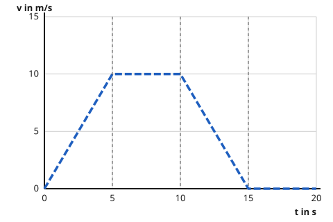

Das Geschwindigkeit-Zeit-Diagramm lesen
Mit einem KI-Tutor lernen
Ein KI-Tutor erklärt dir diese Seite und hilft dir bei den Übungen. Wähl deinen Assistenten:
Mit Claude öffnen Mit ChatGPT öffnen Mit Mistral Vibe öffnen
Du nutzt dein eigenes Konto beim Anbieter. Der Assistent ist kein Angebot von lernapps.net: lernapps liefert nur Inhalte und Übungen. Die Wahl gilt für alle Seiten, nur auf diesem Gerät.
Einstieg - Der Tacho schreibt mit
Stell dir vor, du schaust bei einer Radfahrt alle paar Sekunden auf den Tacho und schreibst das Tempo auf. Das Weg-Zeit-Diagramm von der letzten Seite zeigt, wo du bist. Das Geschwindigkeit-Zeit-Diagramm zeigt, wie schnell du gerade bist.
Anschaulich erklärt
Im Diagramm geht die Zeit nach rechts, die Geschwindigkeit nach oben. Jeder Punkt der Linie sagt: Zu dieser Zeit fährst du so schnell. Hier steht nur das Tempo, nicht die Richtung. Das Bild zeigt eine Radfahrt in vier Abschnitten von je 5 Sekunden, die gestrichelten senkrechten Linien trennen sie.

- Die Linie steigt: Das Tempo wird größer, das Rad beschleunigt.
- Die Linie ist waagerecht: Das Tempo bleibt gleich.
- Die Linie fällt: Das Tempo wird kleiner, das Rad bremst ab.
- Die Linie liegt auf der Null: Das Rad steht.
Die Fahrt eines Rades in vier Abschnitten. Achte darauf, wo die Linie steigt, fällt oder waagerecht ist.
Quelle: eigene Zeichnung. Lizenz: CC-BY-4.0.- Geschwindigkeit-Zeit-Diagramm
Ein Geschwindigkeit-Zeit-Diagramm zeigt, wie groß die Geschwindigkeit eines Körpers zu jeder Zeit ist. Die Zeit steht auf der waagerechten Achse, die Geschwindigkeit auf der senkrechten.
Achtung - die Höhe der Linie ist das Tempo, nicht der Weg
Wenn die Linie fällt, fährt das Rad langsamer. Es fährt nicht zurück. Es kommt immer noch weiter, nur mit kleinerem Tempo. Und wenn die Linie waagerecht ist, steht das Rad nicht: Es fährt mit gleichem Tempo. Stillstand liegt nur auf der Nulllinie.
Ausprobieren im Bewegungslabor
Das Labor kennst du schon: 20 Sekunden in vier Abschnitten zu je 5 Sekunden, am Anfang mit 10 m/s. Jetzt siehst du das Geschwindigkeit-Zeit-Diagramm deiner Fahrt. Mit den Reglern stellst du das Tempo am Ende jedes Abschnitts ein. Die Linie geht gerade von dem Wert am Anfang zu dem am Ende. Die Kreise auf der Linie sind die Enden der Abschnitte.
Probiere der Reihe nach aus:
- Stelle Abschnitt 2 auf 20 m/s. Was macht die Linie in Abschnitt 2?
- Drücke auf "Zurücksetzen". Stelle Abschnitt 1 bis 4 auf 0 m/s. Wo liegt die Linie, wenn du stehst?
- Drücke wieder auf "Zurücksetzen". Setze bei Abschnitt 4 den Haken "rückwärts". Was ändert sich im Geschwindigkeit-Zeit-Diagramm?
Abschnitt 1 (0 bis 5 s)
Du bleibst bei 10 m/s.
Abschnitt 2 (5 bis 10 s)
Du bleibst bei 10 m/s.
Abschnitt 3 (10 bis 15 s)
Du bleibst bei 10 m/s.
Abschnitt 4 (15 bis 20 s)
Du bleibst bei 10 m/s.
Das Bewegungslabor zeigt eine Fahrt von 20 Sekunden in vier Abschnitten. Zu Beginn fährst du mit 10 m/s gleichmäßig: Das Geschwindigkeit-Zeit-Diagramm ist dann eine waagerechte Linie bei 10 m/s. Mit JavaScript stellst du für jeden Abschnitt das Tempo am Ende ein und siehst, wie die Linie steigt, fällt oder waagerecht bleibt.
Beispiel - Werte und Abschnitte ablesen
Was zeigt die Radfahrt von oben?
Schau auf das Diagramm des Rades. Von 0 bis 5 s steigt die Linie von 0 auf 10 m/s: Das Rad fährt an und wird schneller. Von 5 bis 10 s ist sie waagerecht bei 10 m/s: Das Rad fährt mit gleichem Tempo. Von 10 bis 15 s fällt sie von 10 auf 0 m/s: Das Rad bremst bis zum Halt. Von 15 bis 20 s liegt sie auf der Null: Das Rad steht.
Übung
Übung
Lösung
Radfahrer A
Die Linie von A steigt. Das Tempo von A wird größer, A beschleunigt.
Radfahrer B
Die Linie von B ist waagerecht. Das Tempo bleibt gleich, B fährt gleichmäßig.
Radfahrer C richtige Antwort
Die Linie von C fällt von 13 auf 3 m/s. Das Tempo sinkt, C bremst ab.
Wer langsamer wird, hat eine fallende Linie im Geschwindigkeit-Zeit-Diagramm. Das Tempo ist die Höhe der Linie, und die wird bei C kleiner.
Mehr dazu:
Übung
Lösung
Richtige Antwort: 12 m/s (erlaubte Abweichung: 1 m/s)
Bei 8 Sekunden liegt die Linie bei 12 m/s. Du suchst 8 auf der Zeitachse, gehst nach oben bis zur Linie und liest links das Tempo ab.
Mehr dazu:
Übung
Lösung
Richtige Antwort: Die Aussage stimmt nicht.
Das stimmt nicht. Eine fallende Linie heißt, dass das Tempo kleiner wird. Das Rad bremst, fährt aber weiter in dieselbe Richtung. Die Richtung steht in diesem Diagramm gar nicht.
Mehr dazu:
Übung
Lösung
Es steht still.
Stillstand wäre eine waagerechte Linie auf der Nulllinie, bei 0 m/s. Hier sind es 10 m/s.
Es fährt mit gleichbleibendem Tempo von 10 m/s. richtige Antwort
Die Höhe der Linie ist das Tempo. Bleibt sie gleich, bleibt das Tempo gleich.
Es wird immer schneller.
Dann müsste die Linie steigen. Eine waagerechte Linie bleibt auf gleicher Höhe.
Waagerecht heißt: gleiche Höhe, also gleiches Tempo. Welches Tempo, liest du an der senkrechten Achse ab, hier 10 m/s.
Mehr dazu: